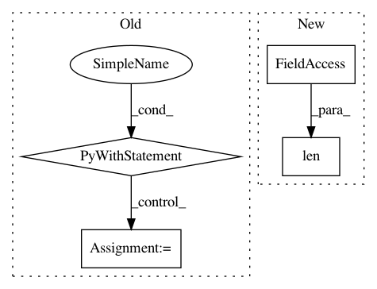

3d305831a0edd1288cc2f94f81debbdc359d7bb3,tensorlayer/layers/lambda_layers.py,Lambda,__init__,#Lambda#Any#Any#Any#Any#,61
Before Change
if fn is None:
raise AssertionError("The `fn` argument cannot be None")
with tf.compat.v1.variable_scope(name) as vs:
self.outputs = fn(self.inputs, **self.fn_args)
variables = tf.compat.v1.get_collection(TF_GRAPHKEYS_VARIABLES, scope=vs.name)
self._add_layers(self.outputs)
self._add_params(variables)
After Change
fn_name = repr(self.fn)
except:
fn_name = "name not available"
logging.info("Lambda %s: func: %s, len_weights: %s" % (self.name, fn_name, len(self._weights)))
self.build()
self._built = True
In pattern: SUPERPATTERN
Frequency: 3
Non-data size: 4
Instances
Project Name: tensorlayer/tensorlayer
Commit Name: 3d305831a0edd1288cc2f94f81debbdc359d7bb3
Time: 2019-03-22
Author: jingqing.zhang15@imperial.ac.uk
File Name: tensorlayer/layers/lambda_layers.py
Class Name: Lambda
Method Name: __init__
Project Name: dmlc/gluon-cv
Commit Name: 4999f9795af7a21ca69adf5f72301b79f719498e
Time: 2018-06-05
Author: 8041160+zhanghang1989@users.noreply.github.com
File Name: gluoncv/model_zoo/pspnet.py
Class Name: PSPNet
Method Name: __init__
Project Name: streamlit/streamlit
Commit Name: 5ca403cee17ee1e2a704e03bf06d47f2ce9ba222
Time: 2020-02-06
Author: naomi@nthmost.com
File Name: examples/audio.py
Class Name:
Method Name: